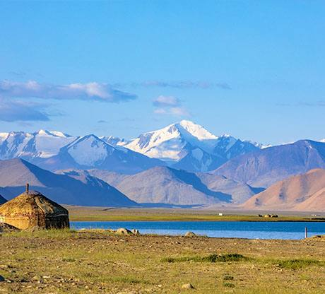

An independent editorial conceptPlaces · People · Perspective
The art of living well · Volume 01Go
Go
slow.
Go deep.
A new luxury is emerging. It has nothing to do with doing more, and everything to do with feeling more.
Read the cover story Intriq Journal / The Travel IssueCover story / 01
Intriq Journal / The Travel IssueCover story / 01To travel beautifully is to know when to stop.
Less itinerary. More intuition. An issue about the value of staying, seeing and connecting beyond the usual highlights.
Inside the issueThe editor's selection
 01 / Culture
01 / CultureThe luxury of remaining in Kyoto
Trade the checklist for the slow discovery of a neighbourhood.
 02 / Place
02 / PlaceItaly, one village at a time
The extraordinary rewards of letting one place become familiar.
 03 / Journey
03 / JourneyWhen the journey is the destination
Why a slow arrival can be more memorable than the arrival itself.

04 / Private journeysBetween worlds: Southern Xinjiang
A cultural route from Kashgar and the Pamirs to the Taklamakan and Kizil Caves.
 05 / Literature
05 / LiteratureThe journey that changes the traveller
Nicolas Bouvier and the transforming power of the open road.